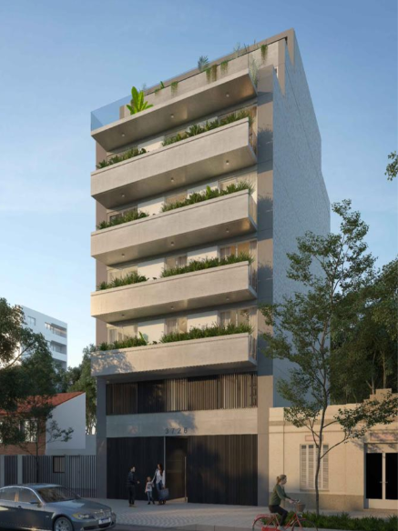
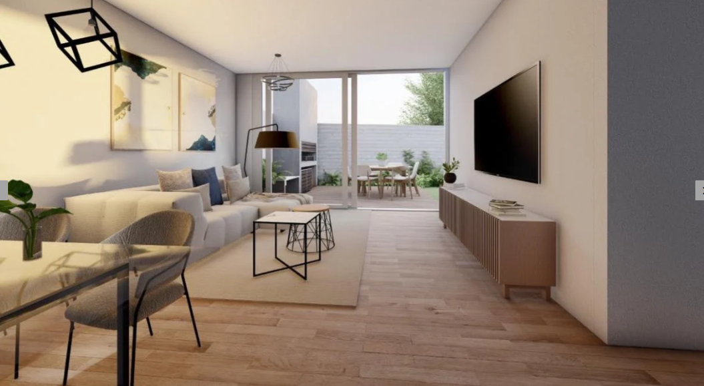
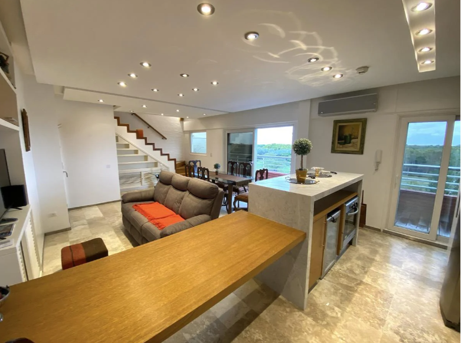

- Departamento 3 ambientes, amplios balcones, living comedor amplio, cocina integrada, baño completo y toilette. 
- Monoambiente Emprendimiento en pozo - Villa Devoto 
- 3 ambientes con vista al Río - Puerto Madero 
- gimnasio
- salon de usos multiples
- amplio jardin con solarium
- 2 piscinas
- sauna
- yacuzi
- lavadero
El concepto general es de Estar-Comedor con cocinas integradas y amplios balcones. Unidades Monoambientes y 3 ambientes. Las unidades de 3 ambientes dispondrán de un baño principal y un toillete por separado.Dentro de las diferentes tipologías de viviendas, el proyecto cuenta con dos unidades que tienen un plus adicional, una en el piso 6to, con un balcón aterrazado con parrilla y jacuzzi exclusivo. La otra unidad se ubicará en la planta baja y dispondrá de un jardín exterior de 43,00m2 con parrilla de uso exclusivo. En la planta baja se localizan dos cocheras privadas con acceso independiente cada una. El edificio dispondrá de un pequeño Salón de usos múltiples de 27,00m2 con baño privado y office, que se sumará a las áreas exteriores aledañas.El edificio dispondrá de un estacionamiento de bicicletas para todas las unidades funcionales. Las cantidades dependerán de la superficie de cada unidad y de las reglamentaciones vigentes. Anticipo 30 % y cuotas. Entrega estimada Diciembre 2023 Nota Importante: Toda la información y medidas provistas son aproximadas y deberán ratificarse con la documentación pertinente y no compromete contractualmente a nuestra empresa. Fotografías no vinculantes ni contractuales.
Descripción de la Propiedad
Monoambientes y Departamentos 3 ambientes, amplios balcones, living comedor amplio, cocina integrada, baño completo y toilette. El Proyecto El concepto general es de Estar-Comedor con cocinas integradas y amplios balcones. Unidades Monoambientes y 3 ambientes. Las unidades de 3 ambientes dispondrán de un baño principal y un toillete por separado. Dentro de las diferentes tipologías de viviendas, el proyecto cuenta con dos unidades que tienen un plus adicional, una en el piso 6to, con un balcón aterrazado con parrilla y jacuzzi exclusivo. La otra unidad se ubicará en la planta baja y dispondrá de un jardín exterior de 43,00m2 con parrilla de uso exclusivo. En la planta baja se localizan dos cocheras privadas con acceso independiente cada una. El edificio dispondrá de un pequeño Salón de usos múltiples de 27,00m2 con baño privado y office, que se sumará a las áreas exteriores aledañas. El edificio dispondrá de un estacionamiento de bicicletas para todas las unidades funcionales. Las cantidades dependerán de la superficie de cada unidad y de las reglamentaciones vigentes. Anticipo 30 % y cuotas. Entrega estimada Diciembre 2023 Nota Importante: Toda la información y medidas provistas son aproximadas y deberán ratificarse con la documentación pertinente y no compromete contractualmente a nuestra empresa. Fotografías no vinculantes ni contractuales.
Descripcion de la Propiedad
Amplio 3 ambientes con balcón aterrazado, vista panorámica al río y baño con jacuzzi, completamente reciclado y equipado como se puede apreciar en las fotografías.